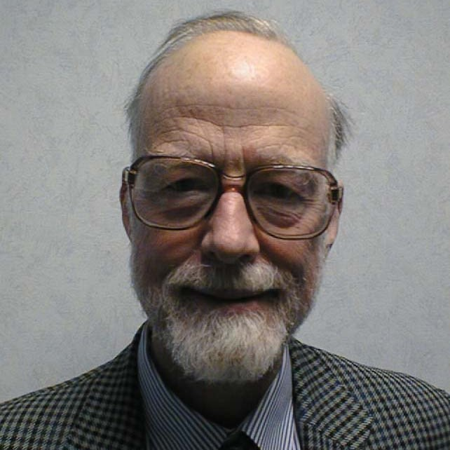
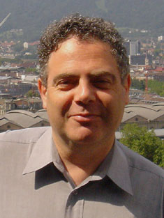

|


Testing: Academic &
Industrial Conference
Practice and Research Techniques
|
Dr. Wolfgang Grieskamp Wolfgang Grieskamp is a principal architect and researcher in the Protocol Engineering Team at Microsoft, Server Tools and Business, which aims to create tools and engineering methods that enable software engineers to build, test, and maintain interoperable products from Microsoft Technical Documentation. To achieve this goals they apply modeling, model-based testing, and other advanced technologies. Before joining Microsoft he worked for six years at Microsoft Research, developing MBT technology and the Spec Explorer family of MBT tools. Spec Explorer has moved together with him from Microsoft Research to Windows, where it is successfully productized and maintained. Prof. Sir Tony Hoare  Sir Charles Antony Richard Hoare (Tony Hoare or C.A.R. Hoare, born January 11, 1934) is a British computer scientist, probably best known for the development in 1960 of Quicksort (or Hoaresort), one of the world's most widely used sorting algorithms, Hoare logic, the formal language Communicating Sequential Processes (CSP) used to specify the interactions between concurrent processes, structuring computer operating systems using the monitor concept, and the axiomatic specification of programming languages. He is now an Emeritus Professor at the Oxford University Computing Laboratory, and is also a senior researcher at Microsoft Research in Cambridge, England. He received the 1980 ACM Turing Award for "his fundamental contributions to the definition and design of programming languages". Prof. Bertrand Meyer  Bertrand Meyer is Professor of Software Engineering at ETH Zurich (the Swiss Federal Institute of Technology), which he joined in 2001 and was chairman of the computer science department from 2004 to 2006. He remains Chief Architect of Eiffel Software, the company he founded in California in 1985. He is the author of a number of books translated into many languages, including "Object-Oriented Software Construction" (Jolt Award 1997), "Reusable Software", "Introduction to the Theory of Programming Languages", "Eiffel: The Language" and several others, as well as many articles and over 60 edited conference proceedings. He has led the design and implementation of numerous tools and libraries used in production applications, including the open-source EiffelStudio environment, and serves as consultant to industry and government agencies. He is the principal designer of the Eiffel language and method, and the editor of the Eiffel language standard, accepted by the International Standards Organization in 2006. His research interests range over object-oriented analysis, design and programming, concurrency (SCOOP model), object persistence, development environments, software project management, software verification, automatic testing, formal methods, programming language semantics, and educational issues. He is the recipient of the Dahl-Nygaard object technology award and, in 2007, of the ACM Software System Award.
|
 Cumberland Lodge, Windsor, UK Sponsored by:
|